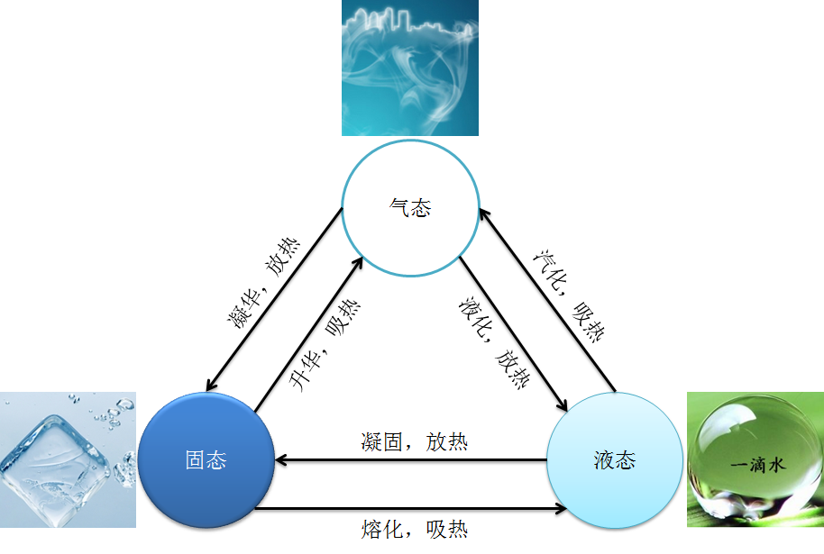
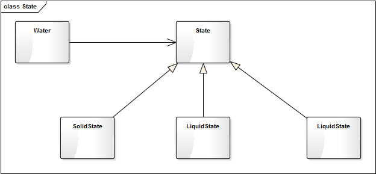
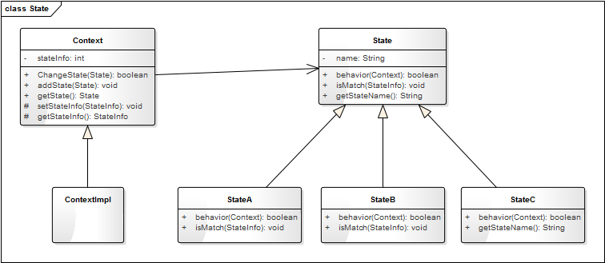

- 00 生活中的设计模式：启程之前，请不要错过我.md.html
- 01 监听模式：坑爹的热水器.md.html
- 02 适配模式：身高不够鞋来凑.md.html
- 03 状态模式：人与水的三态.md.html
- 04 单例模式：你是我生命的唯一.md.html
- 05 职责模式：我的假条去哪了.md.html
- 06 中介模式：找房子问中介.md.html
- 07 代理模式：帮我拿一下快递.md.html
- 08 装饰模式：你想怎么穿就怎么穿.md.html
- 09 工厂模式：你要拿铁还是摩卡.md.html
- 10 迭代模式：下一个就是你了.md.html
- 11 组合模式：自己组装电脑.md.html
- 12 构建模式：想要车还是庄园.md.html
- 13 克隆模式：给你一个分身术.md.html
- 14 策略模式：怎么来不重要，人到就行.md.html
- 15 命令模式：大闸蟹，走起！.md.html
- 16 备忘模式：好记性不如烂笔头.md.html
- 17 享元模式：颜料很贵必须充分利用.md.html
- 18 外观模式：学妹别慌，学长帮你.md.html
- 19 访问模式：一千个读者一千个哈姆雷特.md.html
- 20 生活中的设计模式：与经典设计模式的不解渊源.md.html
- 21 生活中的设计模式：那些未完待续的设计模式.md.html
- 22 深入解读过滤器模式：制作一杯鲜纯细腻的豆浆.md.html
- 23 深入解读对象池技术：共享让生活更便捷.md.html
- 24 深入解读回调机制：把你技能亮出来.md.html
- 25 谈谈我对设计模式的理解.md.html
- 26 谈谈我对设计原则的思考.md.html
- 27 谈谈我对项目重构的看法.md.html
03 状态模式：人与水的三态
【故事剧情】
一个天气晴朗的周末，Tony 想去图书馆给自己充充电。于是背了一个双肩包，坐了一个多小时地铁，来到了首都图书馆。走进一个阅览室，Tony 看到一个青涩的小女孩拿着一本中学物理教科书，认真地看着热力学原理……女孩容貌像极了 Tony 中学的物理老师，不知不觉间 Tony 想起了他那可爱的老师，想起了那最难忘的一节课……
Viya 老师站在一个三尺讲堂上，拿到一本教科书，给大家讲着水的特性：人有少年、壮年、老年三个不同的阶段；少年活泼可爱，壮年活力四射，老年充满智慧。 水也一样，水有三种不同的状态：固态——冰坚硬寒冷，液态——水清澈温暖，气态——气虚无缥缈。更有意思的是水不仅有三种状态，而且三种状态还可以相互转换。冰吸收热量可以熔化成水，水吸收热量可以汽化为气，气释放热量可以凝华成冰……
虽然时隔十几年，但 Viya 老师那甜美的容貌和生动的讲课方式依然历历在目……

用程序来模拟生活
水是世界上最奇特的物质之一，不仅滋润万物，更是变化万千。你很难想象冰、水、气其实是同一个东西 H2O，看到冰你可能更会联想到玻璃、石头，看到水你可能更会联想到牛奶、可乐，看到气可能更会联想到空气、氧气。三个不同状态下的水好像是三种不同的东西。
水的状态变化万千，而程序也可以实现万千的功能。那如何用程序来模拟水的三种不同状态及相互转化呢？
我们从对象的角度来考虑会有哪些类，首先不管它是什么状态始终是水（H2O），所以会有一个 Water 类；而它又有三种状态，我们可以定义三个状态类：SolidState，LiquidState，GaseousState；从 SolidState，LiquidState，GaseousState 这三个单词中我们会发现都有一个 State 后缀，于是我们会想它们之间是否有一些共性，能否提取出一个更抽象的类，这个类就是状态类（State）。这些类之间的关系大致如下：

Ok，我们已经知道了大概的关系，那就开始 Coding 实现吧，在实现的过程中不断完善。
源码示例：
class Water:
"水(H2O)"
def __init__(self, state):
self.__temperature = 25
self.__state = state
def setState(self, state):
self.__state = state
def changeState(self, state):
if (self.__state):
# cout << "由" << m_pState->GetStateName() << "变为" << pState->GetStateName() << endl;
print("由", self.__state.getStateName(), "变为", state.getStateName())
else:
print("初始化为", state.getStateName())
self.__state = state
def getTemperature(self):
return self.__temperature
def setTemperature(self, temperature):
self.__temperature = temperature
if (self.__temperature <= 0):
self.changeState(SolidState("固态"))
elif (self.__temperature <= 100):
self.changeState(LiquidState("液态"))
else:
self.changeState(GaseousState("气态"))
def riseTemperature(self, step):
self.setTemperature(self.__temperature + step)
def reduceTemperature(self, step):
self.setTemperature(self.__temperature - step)
def behavior(self):
self.__state.behavior(self)
class State:
"状态"
def __init__(self, name):
self.__name = name
def getStateName(self):
return self.__name
def behavior(self, water):
pass
class SolidState(State):
"固态"
def __init__(self, name):
super().__init__(name)
def behavior(self, water):
print("我性格高冷，当前体温", water.getTemperature(),
"摄氏度，我坚如钢铁，仿如一冷血动物，请用我砸人，嘿嘿……")
class LiquidState(State):
"液态"
def __init__(self, name):
super().__init__(name)
def behavior(self, water):
print("我性格温和，当前体温", water.getTemperature(),
"摄氏度，我可滋润万物，饮用我可让你活力倍增……")
class GaseousState(State):
"气态"
def __init__(self, name):
super().__init__(name)
def behavior(self, water):
print("我性格热烈，当前体温", water.getTemperature(),
"摄氏度，飞向天空是我毕生的梦想，在这你将看不到我的存在，我将达到无我的境界……")
测试代码：
def testState():
"状态模式的测试代码"
water = Water(LiquidState("液态"))
water.behavior()
water.setTemperature(-4)
water.behavior()
water.riseTemperature(18)
water.behavior()
water.riseTemperature(110)
water.behavior()
water.setTemperature(60)
water.behavior()
water.reduceTemperature(80)
water.behavior()
输出结果：
我性格温和，当前体温 25 摄氏度，我可滋润万物，饮用我可让你活力倍增……
由 液态 变为 固态
我性格高冷，当前体温 -4 摄氏度，我坚如钢铁，仿如一冷血动物，请用我砸人，嘿嘿……
由 固态 变为 液态
我性格温和，当前体温 14 摄氏度，我可滋润万物，饮用我可让你活力倍增……
由 液态 变为 气态
我性格热烈，当前体温 124 摄氏度，飞向天空是我毕生的梦想，在这你将看不到我的存在，我将达到无我的境界……
由 气态 变为 液态
我性格温和，当前体温 60 摄氏度，我可滋润万物，饮用我可让你活力倍增……
由 液态 变为 固态
我性格高冷，当前体温 -20 摄氏度，我坚如钢铁，仿如一冷血动物，请用我砸人，嘿嘿……
从剧情中思考状态模式
从上面的 Demo 中我们可以发现，水就有三种不同状态冰、水、水蒸汽，三种不同的状态有着完全不一样的外在特性：
- 冰，质坚硬，无流动性，表面光滑；
- 水，具有流动性；
- 水蒸汽，质轻，肉眼看不见，却存在于空气中。这三种状态的特性是不是相差巨大？简直就不像是同一种东西，但事实却是不管它在什么状态，其内部组成都是一样的，都是水分子（H2O）。
如水一般，状态即事物所处的某一种形态。状态模式是说一个对象在其内部状态发生改变时，其表现的行为和外在属性不一样，这个对象看上去就像是改变了它的类型一样。因此，状态模式又称为对象的行为模式。
状态模式的模型抽象
代码框架
上面的示例代码还是相对比较粗糙，也有一些不太合理的实现，如：
- Water 的 setTemperature（self，temperature）方法不符合程序设计中的开放封闭原则。虽然水只有三种状态，但其他场景下的状态模式的应用可能会有更多的状态，如果要再加一个状态（State），则要在 SetTemperature 中再一个 if else 判断。
- 表示状态的类应该只会有一个实例，因为不可能出现“固态1”、“固态2”的情形，所以状态类的实现要使用单例，关于单例模式，会在下一章中进一步讲述。
针对这些问题，我们可以对它进行进一步的重构和优化，抽象出状态模式的框架模型。
class Context:
"状态模式的上下文环境类"
def __init__(self):
self.__states = []
self.__curState = None
# 状态发生变化依赖的信息数据,在有多个变量决定状态的
# 实际复杂应用场景中，可以将其单独定义成一个类
self.__stateInfo = 0
def addState(self, state):
if (state not in self.__states):
self.__states.append(state)
def changeState(self, state):
if (state is None):
return False
if (self.__curState is None):
print("初始化为", state.getStateName())
else:
print("由", self.__curState.getStateName(), "变为", state.getStateName())
self.__curState = state
self.addState(state)
return True
def getState(self):
return self.__curState
def _setStateInfo(self, stateInfo):
self.__stateInfo = stateInfo
for state in self.__states:
if( state.isMatch(stateInfo) ):
self.changeState(state)
def _getStateInfo(self):
return self.__stateInfo
class State:
"状态的基类"
def __init__(self, name):
self.__name = name
def getStateName(self):
return self.__name
def isMatch(self, stateInfo):
"状态信息stateInfo是否在当前的状态范围内"
return False
def behavior(self, context):
pass
类图
上面的代码框架可用类图表示如下：

基于框架的实现
有了上面的代码框架之后，我们要实现示例代码的功能就会更简单了。最开始的示例代码我们假设它为 version 1.0，那么再看看基于框架的 version 2.0 吧。
class Water(Context):
"水(H2O)"
def __init__(self):
super().__init__()
self.addState(SolidState("固态"))
self.addState(LiquidState("液态"))
self.addState(GaseousState("气态"))
self.setTemperature(25)
def getTemperature(self):
return self._getStateInfo()
def setTemperature(self, temperature):
self._setStateInfo(temperature)
def riseTemperature(self, step):
self.setTemperature(self.getTemperature() + step)
def reduceTemperature(self, step):
self.setTemperature(self.getTemperature() - step)
def behavior(self):
state = self.getState()
if(isinstance(state, State)):
state.behavior(self)
# 单例的装饰器
def singleton(cls, *args, **kwargs):
"构造一个单例的装饰器"
instance = {}
def __singleton(*args, **kwargs):
if cls not in instance:
instance[cls] = cls(*args, **kwargs)
return instance[cls]
return __singleton
@singleton
class SolidState(State):
"固态"
def __init__(self, name):
super().__init__(name)
def isMatch(self, stateInfo):
return stateInfo < 0
def behavior(self, context):
if (isinstance(context, Water)):
print("我性格高冷，当前体温", context.getTemperature(),
"摄氏度，我坚如钢铁，仿如一冷血动物，请用我砸人，嘿嘿……")
@singleton
class LiquidState(State):
"液态"
def __init__(self, name):
super().__init__(name)
def isMatch(self, stateInfo):
return (stateInfo >= 0 and stateInfo < 100)
def behavior(self, context):
if (isinstance(context, Water)):
print("我性格温和，当前体温", context.getTemperature(),
"摄氏度，我可滋润万物，饮用我可让你活力倍增……")
@singleton
class GaseousState(State):
"气态"
def __init__(self, name):
super().__init__(name)
def isMatch(self, stateInfo):
return stateInfo >= 100
def behavior(self, context):
if (isinstance(context, Water)):
print("我性格热烈，当前体温", context.getTemperature(),
"摄氏度，飞向天空是我毕生的梦想，在这你将看不到我的存在，我将达到无我的境界……")
这里只要改一下上面测试代码的第一行就可以了：
water = Water()
自己跑一下，会发现输出结果和之前的是一样的。
模型说明
- 在状态模式实现的时候，实现的场景状态有时候会非常复杂。决定状态变化的因素也会非常多，这个时候我们可以把决定状态变化的属性单独抽象成一个类 StateInfo，这样判断状态属性是否符合当前的状态 isMatch 时就可以传入更多的信息。
- 每一种状态应当只有唯一的一个实例。
应用场景
- 一个对象的行为取决于它的状态，并且它在运行时可能经常改变它的状态从而改变它的行为。
- 一个操作中含有庞大的多分支的条件语句，且这些分支依赖于该对象的状态，且每一个分支的业务逻辑非常复杂时，我们可以使用状态模式来拆分他不同分支逻辑，使程序有更好的可读性可维护性。